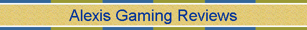
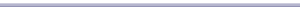

Home | Blog posts | Site directory | Wallpapers | Projects | Freedom Wall | Gemini (via proxy) |
RSS 1.0 Feed | RSS 2.0 Feed | Atom 1.0 Feed
Projects
My current and upcoming works.

Suckless Utilities |
Suckless Utilities is a pack of my custom builds of Suckless programs like dwm and st. It's recommended to use these instead of desktop enviroments in my opinion.
Clone from GitHub Clone via GitLab
Itch.io Games |
Some of my not-so-popular Indie games. I developed Bounce Plus!, Jeff Bottle Rocket Demo and more.
CyanogenMax2D 2.0 Alpha Testing |
The most pointless simulator known by humankind. It's basically Android inside an Android. If you want to test the latest builds from months ago, click here.
Ken 3D Blast (soon?) |
A recap of the Mother 1 novelization that's more or less similiar to "earthbound.mp4". Progress has been done, if you want to know more, check out the server.
An asset and games store in WordPress. Contains Max2D content that you might like.
Borderline Forever YTP (in the works) |
Originally planned as a submission on a YTP collab. It was later cancelled and I'm planning about continuing editing the video.
AGRtv |
A new IPTV channel powered by HLS and ffmpeg, hosted online on Nezlabs Play.
Stream it here! Alternate streams as well as current lineup.Mother: The Animated Series |
I currently serve as a writer for the series, as well as helping on worldbuilding and distributing it on AGRtv.
This page was last edited on Saturday June 21, 2022 5:14AM.